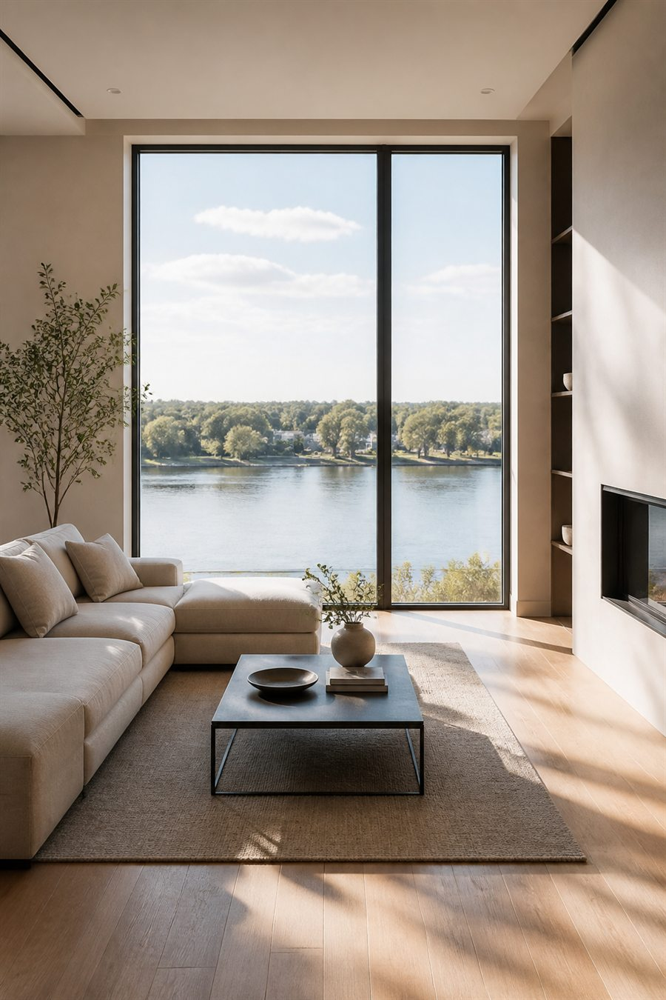
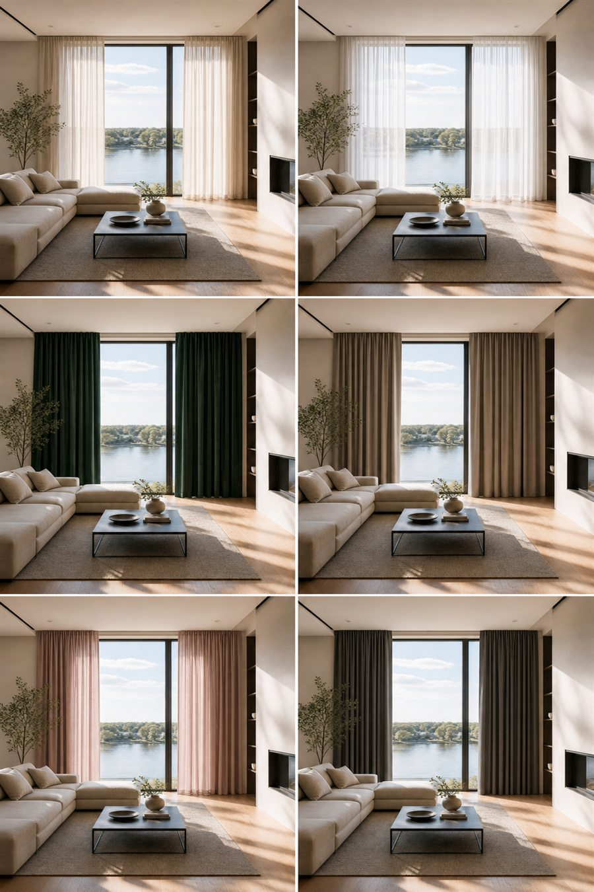

Промтзилла
Как подобрать шторы онлайн с помощью ИИ
Загрузи фото интерьера, а нейросеть сделает премиальную визуальную примерку: один и тот же вид комнаты и много реальных вариантов штор по цвету, плотности, ткани и стилю, без текста на самой картинке.
Пошаговая инструкция
- 1Сфотографируй комнату прямо, чтобы окно, стены, пол и мебель были хорошо видны.
- 2Укажи стиль интерьера, бюджет, тип ткани, желаемую плотность и степень затемнения.
- 3Попроси ИИ не менять комнату, а примерить только разные варианты штор.
- 4Сделай итог в формате визуального борда: 6-8 вариантов на одном листе, без подписей и без любого текста внутри изображения.
- 5Выбери лучший вариант и попроси отдельно вывести крупную финальную визуализацию.
Пример

ДоИсходное фото комнаты с большим окном.

ПослеПремиальный визуальный борд: одно помещение и шесть реалистичных вариантов примерки штор.
Промпт
RU
Загружаю фото интерьера. Нужно подобрать шторы онлайн и сделать премиальный визуальный борд с реальной примеркой штор.
Фото комнаты: {{ФОТО_ИНТЕРЬЕРА}}
Стиль комнаты: {{СТИЛЬ_КОМНАТЫ}}
Тип штор: {{ТИП_ШТОР_ПОРТЬЕРЫ_ТЮЛЬ_РИМСКИЕ_БЛЭКАУТ}}
Цвета для примерки: {{ЦВЕТА_ШТОР}}
Количество вариантов: {{КОЛИЧЕСТВО_ВАРИАНТОВ_НАПРИМЕР_6_ИЛИ_8}}
Материал: {{МАТЕРИАЛ_ТКАНИ}}
Бюджет: {{БЮДЖЕТ}}
Степень затемнения: {{СТЕПЕНЬ_ЗАТЕМНЕНИЯ}}
Требования:
- не меняй мебель, окно, стены, пол и планировку
- добавь только реальные шторы: ткань, складки, карниз или потолочный трек, естественную толщину и прозрачность
- сделай 6-8 вариантов примерки на одном вертикальном листе
- в каждом варианте показывай тот же интерьер и то же окно, чтобы сравнение было честным
- не добавляй текст, подписи, буквы, цифры, иконки, кнопки, логотипы и водяные знаки внутрь изображения
- никаких цветных полосок и плоских заливок: шторы должны выглядеть как настоящая ткань
- дизайн визуального борда премиальный, как каталог интерьерного салона
EN
I am uploading an interior photo. Pick curtains online and create a premium visual board with realistic curtain try-on options.
Room photo: {{ROOM_PHOTO}}
Room style: {{ROOM_STYLE}}
Curtain type: {{CURTAIN_TYPE_DRAPES_SHEER_ROMAN_BLACKOUT}}
Colors to try: {{CURTAIN_COLORS}}
Number of options: {{NUMBER_OF_OPTIONS_FOR_EXAMPLE_6_OR_8}}
Fabric material: {{FABRIC_MATERIAL}}
Budget: {{BUDGET}}
Blackout level: {{BLACKOUT_LEVEL}}
Requirements:
- do not change furniture, window, walls, floor or layout
- add only real curtains: fabric, folds, curtain rod or ceiling track, natural weight and transparency
- create 6-8 try-on options on one vertical sheet
- every option must show the same interior and the same window for honest comparison
- no text, no labels, no letters, no numbers, no icons, no buttons, no logos and no watermarks inside the image
- no colored stripes and no flat color overlays: curtains must look like real fabric
- premium visual board design like an interior showroom catalog
Теги
Эта страница подходит для работы онлайн: промпт можно использовать с ИИ и нейросетью, а плейсхолдеры заменить под свою задачу.